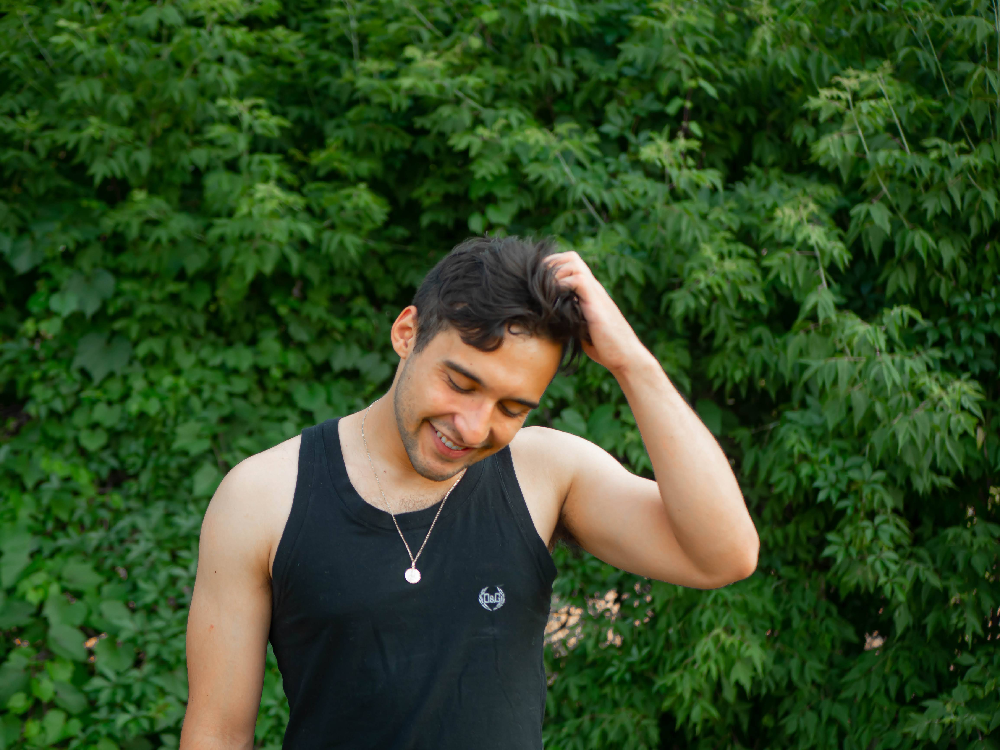

My name is Sebastian Manuel Del Valle Alfonzo Manzo. I was born in Valencia, Venezuela. When I was five years old, my family migrated to Saint Paul, Minnesota’s Midway neighborhood. Growing up, I organized a weekly teen night at Hancock Recreation Center, advocated for expanded public transit access for students, and produced video and print journalism.
I discovered my love for art and communications in college. At the University of Minnesota, I balanced directing the Wake Student Art Magazine’s multimedia department, producing digital content for the College of Science and Engineering, and a full course load of art, literature, and theory classes. I graduated with a BA in Cultural Studies, Comparative Literature, and Cinema in the spring of 2021.
Since graduating, I’ve been working as an archivist, second camera, and production assistant for a PBS Frontline documentary film about public safety in Minneapolis. I have also been working as a communicator and organizer for Serpentina Arts: a collective of Latinx visual artists with an emphasis on professional development and community networking.
I am interested in working between digital and analog means of both still and moving image making. My art is a vehicle for reflection, exploration, and documentation of my experiences. It is also a means of connecting with my community and learning from it. Making art has catalyzed some of the most meaningful conversations, moments, and relationships in my life.
Thank you for visiting my digital space and taking a moment to learn about me. If you would like to connect, feel free to email me at sebastianalfonzomanzo@gmail.com, or send me a message on instagram: @alfonzomanzo.